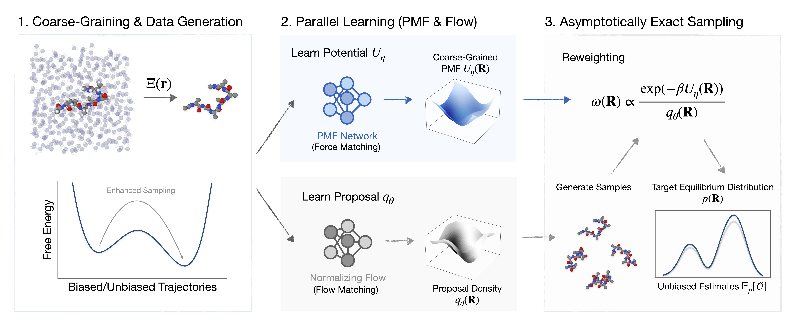
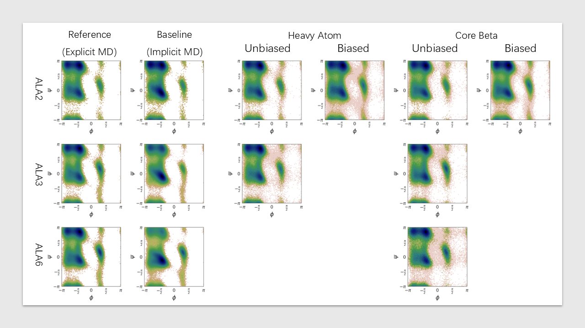
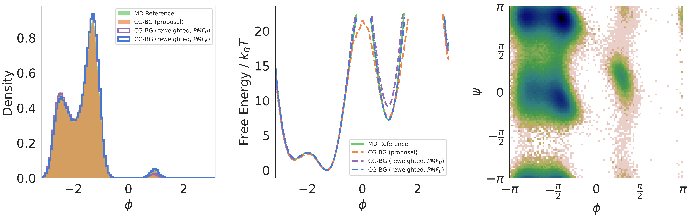

Abstract
Sampling equilibrium molecular configurations from the Boltzmann distribution is a longstanding challenge. Boltzmann Generators (BGs) address this by combining exact-likelihood generative models with importance sampling, but practical scalability is limited. Meanwhile, coarse-grained surrogates enable the modeling of larger systems by reducing effective dimensionality, yet often lack a reweighting procedure required to ensure asymptotically correct statistics. In this work, we propose Coarse-Grained Boltzmann Generators (CG-BGs), a framework for reduced-order generative modeling with importance sampling in coarse-grained coordinate space. CG-BGs generate samples using a flow-based model and reweight them using a learned potential of mean force (PMF). We show that the PMF can be learned from rapidly converged trajectories via enhanced sampling force matching. Experiments demonstrate that CG-BGs capture solvent-mediated interactions in highly reduced representations while substantially reducing computational cost relative to atomistic BGs, providing a practical route toward equilibrium sampling of larger molecular systems.
CG-BGs capture solven-mediated interactions in highly reduced representations
Operating directly in a coarse-grained space, CG-BGs implicitly capture solvent-mediated interactions through the learned PMF, attaining an accuracy that surpasses classical implicit-solvent models while avoiding the computational cost of explicit-solvent simulations. The animation below illustrates this for the Core Beta representation: CG-BG samples (left) accumulate into the equilibrium distribution as the atomistic reference trajectory (right) propogates, both converging to the same free-energy landscape.
Model Overview
CG-BG comprises two components. A flow-based model generates proposal configurations in the coarse-grained coordinate space while providing their densities qθ(R). A separate PMF network learns the free energy Uη(R) from rapidly converged biased trajectories. At inference, the proposal density and the learned PMF are combined to reweight each sample by ω(R) ∝ exp(−βUη(R)) / qθ(R), recovering the target equilibrium distribution and enabling unbiased estimation of thermodynamic observables.

Recovering Equilibrium Distributions from Biased and Unbiased Data
After importance reweighting, CG-BG recovers the equilibrium free-energy landscapes of the alanine peptides from flow models trained on either biased or unbiased trajectories, in close agreement with explicit-solvent MD. Across all systems it surpasses the classical implicit-solvent baselines that upper-bound atomistic Boltzmann Generators.
| Method | JS divergence (↓) | PMF error (↓) | ESS (↑) |
|---|---|---|---|
| Alanine dipeptide | |||
| CG-BG (reweighted) | |||
| Heavy Atom | 0.0048(1) | 0.2005(63) | 0.5112(4) |
| Heavy Atom (Biased) | 0.0063(1) | 0.2277(66) | 0.4115(4) |
| Core Beta | 0.0052(1) | 0.2210(65) | 0.5528(4) |
| Core Beta (Biased) | 0.0057(1) | 0.2093(58) | 0.4818(4) |
| Implicit solvent (GB)† | |||
| OBC1 | 0.0157(2) | 0.3709(92) | — |
| OBC2 | 0.0182(2) | 0.4028(95) | — |
| Alanine tripeptide | |||
| CG-BG (reweighted) | |||
| Heavy Atom | 0.0056(1) | 0.1957(52) | 0.3201(4) |
| Core Beta | 0.0060(1) | 0.2112(51) | 0.4212(5) |
| Implicit solvent (GB)† | |||
| OBC2 | 0.0932(3) | 1.0274(65) | — |
| Alanine hexapeptide | |||
| CG-BG (reweighted) | |||
| Core Beta | 0.0100(1) | 0.3646(81) | 0.1231(3) |
| Implicit solvent (GB)† | |||
| OBC2 | 0.1652(3) | 1.8401(70) | — |
† GB: generalized Born implicit-solvent model; OBC1/OBC2 are its two parameterizations.

Ramachandran free-energy maps. Across alanine di-, tri-, and hexapeptide (rows), reweighted CG-BG under the Heavy Atom and Core Beta mappings matches the explicit-solvent MD reference, whereas the implicit-solvent baseline deviates.
Effect of Coarse-Graining Resolution on Accuracy and Efficiency
Reducing the resolution from Heavy Atom to Core Beta raises the effective sample size and sharply lowers training and inference cost, at the cost of slightly less accurate post-reweighting estimates. Resolution thus trades representational fidelity against statistical and computational efficiency.
| Stage | Core Beta | Heavy Atom | All Atom† |
|---|---|---|---|
| Continuous Normalizing Flow | |||
| Training | 0.45 h | 0.80 h | 2.55 h |
| Inference | 0.95 min | 3.78 min | 14.91 min |
| PMF network | |||
| Training | 1.88 h | 4.11 h | — |
| Inference | 0.66 s | 0.72 s | — |
Training and inference time on alanine dipeptide; inference is measured over 104
samples.
† All Atom generates the full solute configuration without explicit solvent; the PMF network operates only on coarse-grained mappings.
Simulation-Free Evaluation of Learned PMFs
A single set of CG-BG proposals can be reused to benchmark candidate PMFs by reweighting, without any additional simulation. The PMF learned from rapidly converged biased data (PMFB) recovers the reference equilibrium, whereas the one learned from unbiased data (PMFU) does not.

Simulation-free PMF benchmarking. Reweighting a single set of CG-BG proposals under potentials trained on unbiased (PMFU) and rapidly converged biased (PMFB) data. PMFB matches the explicit-solvent MD reference, while PMFU misestimates the metastable populations along φ.
BibTeX
@misc{chen2026coarsegrainedboltzmanngenerators,
title={Coarse-Grained Boltzmann Generators},
author={Weilong Chen and Bojun Zhao and Jan Eckwert and Julija Zavadlav},
year={2026},
eprint={2602.10637},
archivePrefix={arXiv},
primaryClass={cs.LG},
url={https://arxiv.org/abs/2602.10637},
}